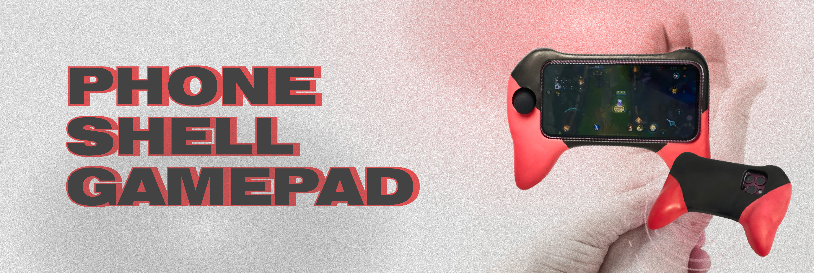
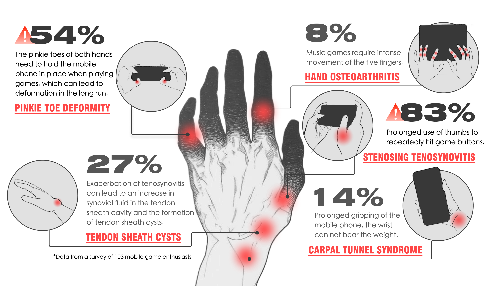
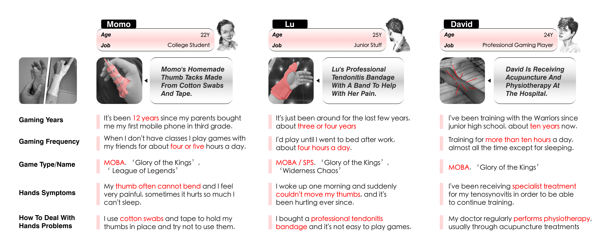
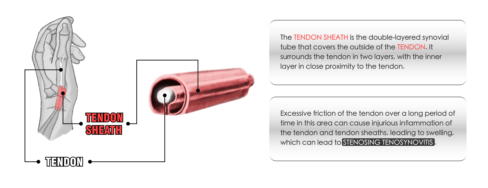
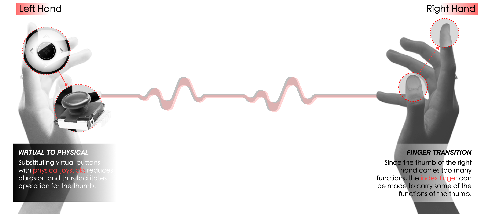

Phone Shell Gamepad
Many people who reap the joy of playing mobile phone games also suffer from corresponding hand diseases, among which stenosing tenosynovitis has the highest morbidity. Through researching the pathogenesis, studying user behaviours and interface features of mainstream MOBA games in the market, it is found that the cause of the disease is the excessive use frequency of thumbs. Therefore, an intelligent phone shell gamepad is designed to prevent stenosing tenosynovitis by early intervention.

Project Type
Design Engineering
Product Design
Arduino
Timeline
Apr 2024 - Jun 2024
Individual
My Role
Research
Product Design
Coding
Tools
Figma
Blender
Arduino
Background
Hand diseases related to playing mobile games
Research
Interviews & Observation
Pathogenesis of stenosing tenosynovitis
Common framework of MOBA games

Insight
Concept

Design Process

Finalization